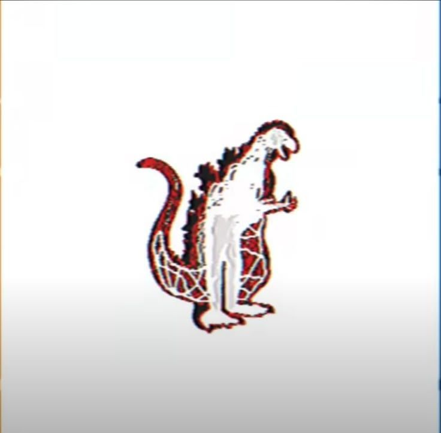

// 01. EL FENÓMENO ANALÓGICO
El terror analógico es un subgénero del horror moderno que ha florecido en plataformas digitales. Este estilo se caracteriza por una estética intencionalmente cruda y nostálgica, diseñada para evocar la inquietud propia de los medios de comunicación de finales del siglo XX.
Características Técnicas:
- Estética VHS: Uso de ruido visual, distorsión y problemas de seguimiento.
- Cortes de señal: Interrupciones repentinas que sugieren fallos catastróficos.
- Alertas de emergencia: Recreación de sistemas de alerta gubernamentales con tonos urgentes.
- Narrativa fragmentada: La historia se reconstruye a partir de piezas sueltas como comerciales antiguos o grabaciones de seguridad.
El género apela al miedo a lo desconocido a través de lo cotidiano, subvirtiendo la sensación de seguridad de los medios analógicos para transformarlos en vehículos de horror existencial.
// 02. INVASIÓN BIOLÓGICA Y ALIENÍGENA
Gemini Home Entertainment
![[IMAGEN_GEMINI]](gemini.jpg)
Presentado como una colección de cintas educativas de los 80, documenta una invasión biológica silenciosa en nuestro sistema solar orquestada por entidades mutadoras de cuerpos bajo la influencia de "The Iris", un planeta viviente y consciente.
Vita Carnis
![[IMAGEN_VITA_CARNIS]](vitacarnis.jpg)
Un escalofriante falso documental que analiza el surgimiento de un nuevo ecosistema biológico compuesto enteramente de carne y estructuras vivas agresivas que atacan a los seres humanos.
Midwest Angelica
![[IMAGEN_MIDWEST]](midwest.jpg)
Registros e informes gubernamentales norteamericanos de los años 90 enfocados en el monitoreo y contención de una gigantesca entidad biológica de origen extraterrestre.
The Smile Tapes
![[IMAGEN_SMILE_TAPES]](smiletapes.jpg)
Registra la aterradora epidemia de una variante de droga sintética en los años 90 que infecta el sistema nervioso, deformando los rostros de las víctimas en sonrisas congeladas antes de volverlos homicidas.
// 03. NOSTALGIA INFANTIL RETORCIDA
The Walten Files
![[IMAGEN_WALTEN]](walten.jpg)
Cintas de entrenamiento empresarial dañadas pertenecientes a un restaurante de comida rápida fundado en los años 70, donde los animatrónicos resguardan oscuros crímenes y almas atrapadas.
Angel Hare
![[IMAGEN_ANGEL_HARE]](angelhare.jpg)
Aparenta ser una simple serie cristiana animada en formato VHS de los noventa, pero la entidad animada principal demuestra tener consciencia y la capacidad de manipular los recuerdos directos de su dueño.
Lacey Games
![[IMAGEN_LACEY]](lacey.jpg)
Simula juegos interactivos en Adobe Flash diseñados para el público infantil femenino en los años 2000, los cuales colapsan rápidamente para revelar brutales escenarios de trauma y abuso psicológico.
Don't Hug Me I'm Scared
![[IMAGEN_DHMIS]](dhmis.jpg)
La famosa obra musical de marionetas que parodia los shows preescolares de la televisión pública, transformando lecciones inocentes sobre el tiempo, el amor o la tecnología en pesadillas surrealistas llenas de gore.
Welcome Home
![[IMAGEN_WELCOME]](welcomehome.jpg)
Una investigación digital interactiva construida en torno a los restos de una colorida producción de marionetas de los años 70 eliminada de la historia por un aparente trasfondo de culto satánico.
Needlemouse (Vintage)
![[IMAGEN_NEEDLE]](needlemouse.jpg)
Deconstrucción en formato analógico del clásico mito de internet "Sonic.exe", mudando la perspectiva hacia la historia de venganza de una empleada asesinada cuya alma quedó atrapada en el código de Sega.
Battington (FNAF VHS)
![[IMAGEN_BATTINGTON]](battington.jpg)
Una colección de cintas VHS hiperrealistas ambientadas en el universo de Five Nights at Freddy's, enfocadas en representaciones gráficas and perturbadoras de los fallos técnicos y el empaquetado de cuerpos en los trajes.
// 04. MUTACIONES, PARÁSITOS Y LO SOBRENATURAL
GREYLOCK
![[IMAGEN_GREYLOCK]](greylock.jpg)
Archivos clínicos gubernamentales y bitácoras policiales que exponen experimentos médicos prohibidos, mutaciones biológicas extremas, parásitos que se apoderan de la mente y manifestaciones demoníacas.
The Boiled One Phenomenon
![[IMAGEN_BOILED]](boiledone.jpg)
Un hackeo masivo a las señales televisivas nocturnas que emite la imagen estática de una entidad rojiza de aspecto infernal, cuya transmisión induce parálisis de sueño masiva en la población civil.
The Man in the Suit

Línea temporal distorsionada donde se revela que el actor original dentro del traje de Godzilla en 1954 sufrió un accidentado evento radioactivo real, fundiéndose biológicamente con la goma del disfraz.
The Mandela Catalogue
![[IMAGEN_MANDELA]](mandela.jpg)
Una de las obras cumbre del género; narra la suplantación de la humanidad en el condado de Mandela por parte de los "Alternos", seres metafísicos que usan el tormento psicológico para empujar a sus víctimas al suicidio.
UrbanSPOOK (The Painter)
![[IMAGEN_URBAN]](urbanspook.jpg)
Archivo policial sobre crímenes sin resolver llevados a cabo por dos desalmados asesinos en serie, quienes retratan las brutales mutilaciones de sus víctimas en pinturas al óleo perturbadoras.
// 05. HACKEO DE SEÑAL E HISTORIA ALTERNATIVA
Local 58
![[IMAGEN_LOCAL58]](local58.jpg)
Pionera del género, muestra la programación regular de una estación de señal abierta siendo interceptada por advertencias apocalípticas relacionadas con eventos cósmicos de la Luna.
The Monument Mythos
![[IMAGEN_MONUMENT]](monument.jpg)
Fabulosa epopeya de conspiraciones gubernamentales y videos educativos falsos que plantean que los monumentos nacionales de los Estados Unidos sirven como prisiones de masivos horrores cósmicos.
Eventide Media Center
![[IMAGEN_EVENTIDE]](eventide.jpg)
Simulación de un sistema de televisión pública de los años 80 infiltrado por crípticos mensajes gubernamentales y transmisiones alienígenas que vaticinan la erradicación del ser humano.
The Nixonverse
![[IMAGEN_NIXON]](nixonverse.jpg)
Expansión del universo de "Monument Mythos" que fusiona superhéroes y figuras de la política de los años 60 con deidades multidimensionales de carácter destructivo.
// 06. ESPACIOS LIMINALES Y METRAJE ENCONTRADO
The Backrooms (Kane Pixels)
![[IMAGEN_BACKROOMS]](backrooms.jpg)
Brillante reconstrucción en 3D ambientada en los años 90 sobre los experimentos de una corporación científica que abre por error portales hacia una dimensión infinita de oficinas vacías infestadas por entes.
No Through Road
![[IMAGEN_NOTHROUGH]](nothroughroad.jpg)
Metraje encontrado fundacional de internet grabado por un grupo de jóvenes atrapados en un bucle espacio-temporal irreversible mientras conducen por un sendero rural británico desolado.
Marble Hornets
![[IMAGEN_MARBLE]](marblehornets.jpg)
La webserie clásica de metraje encontrado nacida en YouTube que dio origen a la mitología moderna de Slenderman (aquí nombrado como "The Operator"), a través de cintas perdidas de un rodaje estudiantil.
TribeTwelve
![[IMAGEN_TRIBETWELVE]](oldestview.jpg)
Diarios de video subidos a internet que exploran las extrañas anomalías que rodean el misterioso deceso de un joven, destapando una siniestra secta interdimensional.
The Oldest View (Kane Pixels)
![[IMAGEN_OLDESTVIEW]](tribetwelve.jpg)
Producción hiperrealista de metraje encontrado sobre un creador que halla las ruinas de un inmenso centro comercial subterráneo sepultado, donde habita un maniquí viviente colosal e implacable.
// 07. ARCHIVO DE VIDEO DETECTADO
TRANSMISIÓN CRÍTICA EN ALTA MAR DE INFORMACIÓN
TERROR ANALÓGICO: Más LOVECRAFTIANOS, Aterradores y Más
[ REPRODUCIR ENLACE SEGURO EN YOUTUBE ]